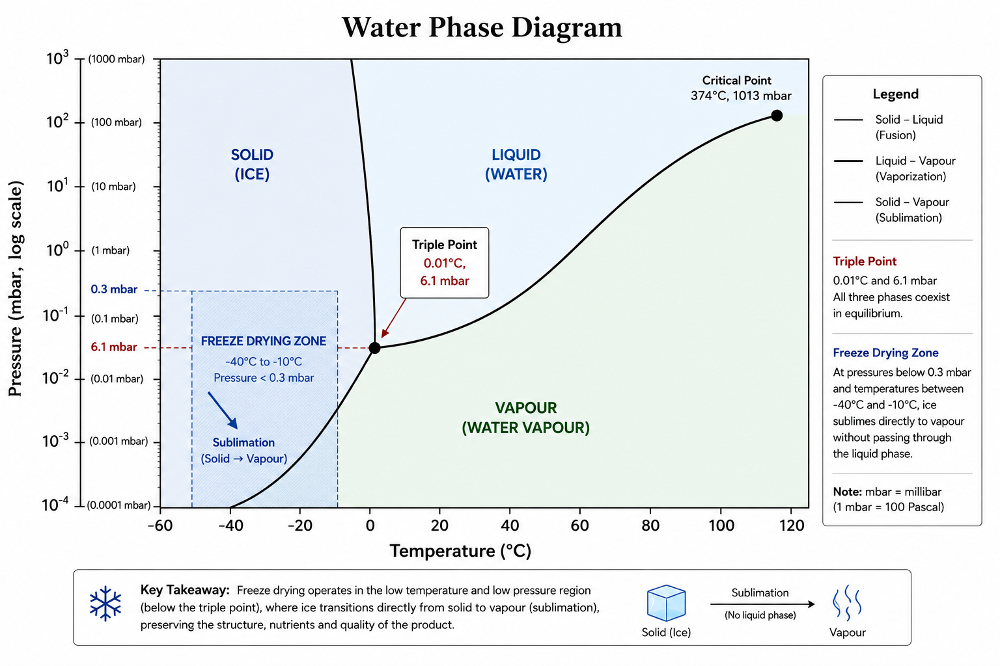

Introduction
Pakistan is an agricultural powerhouse, producing approximately 1.8 to 2.2 million tons of mangoes annually, which ranks it among the world's top five producers. Despite this massive yield, the country makes relatively little money in the global market because it primarily exports raw, perishable fruit rather than value-added products. Conventional processing methods, such as hot air drying or canning, often degrade the fruit's natural flavor, vibrant color, and nutritional value.
However, freeze-drying — technically known as lyophilization — offers a fundamentally different and transformative approach. By removing water through sublimation under vacuum pressure, freeze-drying preserves the cellular structure, aromatic compounds and bioactive molecules of the fruit. The resulting product retains roughly one-tenth of its original mass while preserving over 95% of its original nutrients, extending the shelf life from merely days to several years. This comprehensive article explores the scientific principles, industrial processing, applications and vast export potential of freeze-drying Pakistani mangoes.
1. The Scientific Principles of Freeze-Drying
Freeze-drying, or lyophilization, is a highly advanced dehydration process that removes water from a frozen product by sublimation under reduced pressure. The term derives from the Greek lyo (to dissolve or loosen) and philein (to love), referencing the dried material's strong affinity to rapidly reabsorb the solvent it has lost.
The Mechanism of Sublimation
Unlike conventional hot air drying, which applies heat (typically 60°C to 80°C) to evaporate liquid water, freeze-drying bypasses the liquid phase entirely. The physical basis of this process rests on the phase behavior of water. At standard atmospheric pressure, water exists as ice below 0°C, liquid up to 100°C, and vapor above 100°C. The “triple point” — where solid, liquid and gas phases coexist in equilibrium — occurs at 0.01°C and 6.117 mbar of pressure.
Below this pressure, liquid water cannot exist; ice sublimates directly into vapor. Industrial freeze dryers typically operate well below the triple point, usually between 0.05 and 0.3 mbar, where the sublimation temperature of ice ranges from -40°C to -10°C. The rate of sublimation is governed by the Hertz-Knudsen equation, which relates the mass flux to the vapor pressure difference between the ice interface and the machine's condenser.

Advantages Over Conventional Drying
When foods are dehydrated using hot air, the heat causes cellular collapse, resulting in a tough, leathery and dense structure, alongside significant nutrient loss (up to 40-60%). Spray drying, another common industrial method, involves spraying liquid into a hot air chamber, drying the product in minutes, but the extreme heat can severely degrade delicate biological structures and heat-sensitive vitamins. Conversely, freeze-drying leaves a porous, sponge-like matrix that rapidly and completely rehydrates when exposed to water. Furthermore, operating at sub-zero temperatures effectively arrests microbial growth and enzymatic reactions, yielding a product that remains stable at ambient temperatures for 18 to 24 months without refrigeration or chemical preservatives.

2. The History and Evolution of Lyophilization
The conceptual roots of freeze-drying date back to the 13th century with the Inca civilization of the Andes. The Incas produced chuño by freezing potatoes at high altitudes during the cold nights and then utilizing the intense solar radiation of the thin mountain atmosphere to sublimate the ice during the day. Similarly, in Japan, koya-dofu (freeze-dried tofu) was developed in the same era.
Modern scientific freeze-drying emerged at the turn of the twentieth century. In 1890, Richard Altmann devised a method to freeze-dry plant and animal tissues, and in 1906, Jacques-Arsene d'Arsonval and Frederic Bordas demonstrated the preservation of biological tissues through freezing and vacuum drying. The technology became a commercial reality during the Second World War. Because of the lack of refrigerated transport, crucial medical supplies like blood plasma and penicillin were spoiling. Lyophilization allowed these vital serums to remain chemically stable and viable without refrigeration.
Post-war, the technology expanded into food preservation, heavily driven by the NASA Apollo missions, which relied on freeze-dried meals to minimize payload weight while maximizing nutritional density. By the 1960s, instant coffee became one of the first mass-market freeze-dried consumer products, capitalizing on the method's ability to preserve volatile aromatic compounds lost during spray drying. Today, the global freeze-dried food market exceeds $60 billion annually, yet Pakistan remains a marginal player despite its vast agricultural resources.
3. Why the Pakistani Mango is Ideal for Freeze-Drying
Mango (Mangifera indica L.) is a tropical fruit prized for its unique combination of sweetness, flavor, aroma, acidity and nutritional density. From a food science perspective, mangoes are exceptionally well-suited for freeze-drying for several reasons:
- Moisture and Cellular Structure: Mango flesh contains 80% to 85% water, primarily as free water, which facilitates efficient sublimation during primary drying. The fruit features thin-walled parenchyma cells that collapse minimally during the process, and the absence of stone cells (sclereids) ensures a smooth, non-gritty texture in the dried product.
- Nutritional Density: Mangoes are rich in provitamin A carotenoids, vitamin C, folate, dietary fiber and a polyphenolic profile that includes mangiferin, gallic acid, quercetin, and kaempferol. Because these compounds are highly sensitive to thermal degradation, freeze-drying is the optimal preservation method.
- Aromatic Complexity: Mangoes contain over 270 volatile compounds, including terpenes, esters, and lactones. While conventional heat drying volatilizes or chemically degrades these compounds, freeze-drying traps them within the porous matrix until rehydration.
Key Pakistani Mango Varieties
Pakistan cultivates approximately 170,000 hectares of mangoes, primarily in the Punjab and Sindh provinces. The Indus River valley's high summer temperatures (35°C to 45°C) and mineral-rich soils yield fruit with exceptionally high total soluble solids (TSS). Five major varieties are particularly suited for this industry:

- Sindhri: Known as the “Queen of Mangoes,” this large (300-500g) fruit features a floral-honey aroma, excellent color retention and a TSS of 16-20%. Its low fiber content ensures a smooth, crisp dried texture. People enjoy milkshake made of this variety.
- Chaunsa: Pakistan's most celebrated variety, known as the “King of Mangoes,” weighing 200-350g, boasts intense sweetness (TSS 18-24%) and a complex aroma. While its high sugar content requires careful temperature control during processing to prevent structural collapse, it produces the most intensely flavored freeze-dried product on the market.
- Anwar Ratol: A small variety (150-250g) with extraordinary sweetness (TSS up to 26%). Because of its high sugar and short fresh shelf life (3-5 days), it is an ideal candidate for preservation into snack-sized, intensely sweet dried pieces.
- Langra: A medium-to-large fruit (250-400g) with green skin and a distinctively tart balance (TSS 14-18%). Its firmer flesh structure provides excellent slice integrity during industrial processing.
- Dusehri: A small-to-medium (150-300g) early-maturing variety (harvested May to early June) with a TSS of 16-20%. Its early season allows processing facilities to begin operations earlier in the year, improving equipment utilization.
4. The Complete Industrial Freeze-Drying Process
The industrial lyophilization of mangoes involves a rigorously controlled sequence to maximize throughput while preserving delicate fruit quality.
Pre-Processing Stages
- Harvest and Pre-Cooling: Fruit must be harvested at optimal maturity (75% to 85% ripe) to balance sugar development with structural integrity. Field heat must be removed within two hours of harvest by cooling the fruit to 10°C-12°C to arrest respiration and metabolic activity.
- Sorting and Washing: Optical sorting systems use near-infrared sensors to detect internal defects, after which the fruit undergoes a three-stage wash: a potable water rinse, sanitization in 100-200ppm chlorine or peracetic acid and a final chlorinated rinse at 50ppm.
- Peeling and Cutting: Mechanical peeling removes the epidermis and hypodermis, which contain astringent phenolic compounds. The fruit is then cut into uniform slices (typically 8 to 12mm thick) or diced cubes (10 to 15mm). Size grading is critical, as inconsistent thickness leads to uneven drying rates.
- Pre-treatment: To reduce drying time by 20-30%, mangoes may undergo osmotic dehydration in 40-60% sucrose solutions for 2-4 hours, which reduces initial moisture by 15-25%. Steam blanching (95°C-100°C for 2-3 minutes) inactivates polyphenol oxidase enzymes, while a 0.5-1.0% ascorbic acid dip preserves vitamin C and prevents browning.

The Core Lyophilization Stages
A complete cycle typically requires 20 to 40 hours, governed by three distinct phases:
- Freezing (Thermal Treatment): This is the most critical pre-drying step. The product is cooled in blast freezers to a core temperature of -30°C to -35°C at a controlled rate of 1°C to 2°C per minute. This rate controls the size of the ice crystals; large ice crystals promote faster water vapor removal during sublimation, while avoiding the cellular damage that occurs if freezing is too slow. Pharmaceutical applications emphasize this step heavily, using cryoprotectants (like saccharides and polyols) to safeguard molecular structures against drying stress.
- Primary Drying (Sublimation): During this phase, pressure is reduced to 0.1–0.3 mbar, and shelf temperatures are gradually ramped from -30°C to +20°C. This step removes about 85-90% of the water as ice sublimates directly into vapor. The temperature must be strictly controlled to prevent the product from exceeding its “collapse temperature,” which for mangoes is typically between -25°C and -20°C. (For reference across industries, mathematical models optimizing freeze-dried yogurt found ideal parameters to be a drying temperature of 36.6°C and pressure of 0.023 mmHg over 35.6 hours to achieve maximum crispness and beneficial microbial retention.)
- Secondary Drying (Desorption): Unfrozen, bound water molecules must be desorbed. Shelf temperatures are raised to 30°C-40°C while chamber pressure drops further to 0.05-0.1 mbar. This removes the final 2-5% of moisture, leaving a finished product with just 1% to 3% moisture on a wet basis, and a water activity below 0.30.
Quality Control and Packaging
Quality is measured via precise metrics: water activity must be <0.30, color is quantified via CIELAB coordinates, and microbiological testing screens for pathogens. Because freeze-dried foods are highly porous and hygroscopic, they equilibrate to ambient moisture within hours if exposed to air.
Therefore, packaging is an active barrier system. Multi-layer laminated films (such as Polyethylene, Aluminum Foil, and PET) are used to provide a moisture vapor transmission rate (MVTR) below 0.1 g/m²/day and an oxygen transmission rate (OTR) under 0.5 cm³/m²/day. Nitrogen-flushed modified atmosphere packaging (MAP) displaces oxygen, extending shelf life to 18-24 months.

5. Industrial Equipment and Technologies
Setting up a commercial freeze-drying facility requires significant capital investment and highly specialized equipment:
- Vacuum Chamber: Constructed from highly polished 304 or 316 stainless steel to resist corrosion and thermal cycling, these vessels range from 5 to 50 cubic meters for industrial scale, maintaining leak rates below 0.01 mbar·L/s.
- Process Condenser: Refrigerated coils operating between -50°C and -80°C capture sublimated water vapor. Condensers require 1 to 1.5 square meters of surface area for every kilogram of water removed per hour.
- Heating Shelves: Platforms that serve as heat exchangers, circulating silicone oil to provide precise thermal energy (±0.5°C) from -40°C during loading up to +60°C during secondary drying.
- Refrigeration and Vacuum Systems: Two-stage cascade compression systems utilize refrigerants (R404A, R507, ammonia) to cool shelves and condensers, while rotary vane or dry screw vacuum pumps evacuate non-condensable gases, achieving ultimate pressures of 0.01 mbar.

Advanced Equipment Variations: Modern facilities may utilize radiant freeze dryers, which use infrared radiation to heat shallow product trays uniformly, or microwave-assisted freeze dryers (MFD), which penetrate deeper into the sample, expediting sublimation by 30% to 50%.
6. Commercial Applications and Product Innovation
Freeze-dried mango is highly versatile due to its clean-label nature, lightweight structure, and rapid rehydration properties:
- Snacks and Cereals: Slices and chunks serve as standalone, preservative-free health snacks. Diced mangoes (5-8mm) are ideal for muesli and breakfast cereals, as they rehydrate instantly in milk, unlike tough air-dried alternatives.
- Bakery, Confectionery, and Beverages: Freeze-dried mango powder serves as a potent natural flavoring and coloring agent. Adding just 2% to 5% by weight to chocolates or gummies delivers immense sensory impact, and it dissolves seamlessly into instant beverages.
- Functional Foods: Retaining valuable bioactive compounds makes freeze-dried mango ideal for supplements targeting immune and digestive health.

Ice Cream Development: A Technical Masterclass
Integrating fruit into ice cream represents a significant physical chemistry challenge. Fresh mango puree is 80-85% water; achieving a perceptible mango flavor requires adding 15-25% puree by weight, which severely disrupts the ice cream's frozen matrix. Freeze-dried powder, containing under 3% moisture, delivers equivalent or superior flavor intensity with just a 2-5% addition.
When using fruit chunks as inclusions, moisture migration is a major issue. Because freeze-dried mango has a water activity below 0.3 and the surrounding ice cream base is above 0.8, moisture rapidly transfers from the base into the fruit. This causes the fruit to become soggy and forces ice crystals to form in the surrounding cream — a textural defect known as “sandiness” or “iciness.” To prevent this, manufacturers coat the freeze-dried pieces in edible fats (like cocoa butter or coconut oil) to create a moisture barrier, preserving a crisp, contrasting texture against the creamy base. Premium varieties like Chaunsa and Sindhri offer distinctive profiles that elevate super-premium ice creams above commodity offerings.

Cross-Industry Parallels
The power of lyophilization extends far beyond fruits. In the pharmaceutical sector, it stabilizes biologics, vaccines, and injectable drugs that would otherwise degrade via hydrolysis. In the pet food industry, freeze-drying raw meat products provides the nutritional benefits of a raw diet with the ultimate convenience of room-temperature storage, resulting in a market segment that commands up to 47% of raw pet food sales in the United States.
7. Nutritional Retention and Quality Superiority
The nutritional impact of choosing lyophilization over hot air or spray drying is stark and highly quantifiable:
Vitamin C
Following first-order degradation kinetics, thermal exposure (60-80°C for 8-12 hours) in hot-air drying destroys over 50% of L-ascorbic acid. Spray drying at 150-200°C causes similar thermal damage, retaining only 55% of Vitamin C. Freeze-drying preserves 95% to 97% of Vitamin C content.
Carotenoids and Phenolics
Beta-carotene, responsible for mango's golden color and provitamin A activity, isomerizes at elevated temperatures. Freeze-drying retains over 90% of beta-carotene and 85-90% of total phenolics, whereas hot air drying retains merely 48% and 38%, respectively.
Sensory Quality
Visually, freeze-dried mango boasts a vibrant golden hue (CIELAB L* value of 64.2), whereas hot air-dried fruit appears as a dull brown-orange (L* 42.3). Furthermore, the rehydration ratio of freeze-dried mango (4.2:1) vastly outperforms air-dried alternatives.

8. Economics and Export Opportunities
Pakistan supplies less than 1% of the $8 billion global freeze-dried fruit market, presenting a monumental economic opportunity.
Target Export Markets
- European Union: An annual $2.5 billion import market prioritizing organic certification, sustainability, and clean-label ingredients. While EU regulations are rigorous, EU organic certification allows products to command a 30% to 50% price premium.
- United States: The largest single-country market ($1.2 billion), heavily focused on convenient, portable health snacks. Access requires strict compliance with the FDA's Food Safety Modernization Act (FSMA) and a certified HACCP plan.
- Middle East (GCC): A rapidly growing $400 million market with a strong cultural affinity for Pakistani mango brands. Proximity reduces shipping costs, and consumers place high value on premium gift presentation and halal certification.

Capital Investment and Profitability
The economic viability hinges on scale. A small facility (50-100kg/batch) requires $150,000 to $300,000 in equipment, while large industrial operations exceed $2 million. Operating costs are dominated by energy, accounting for 40-60% of variable expenses, as removing 1kg of water requires 1.5 to 3.0 kWh of electricity.
With fresh fruit yielding 10-12% dried product by weight, raw material costs range from $0.50 to $1.50 per kg. The total processing cost sits between $8 and $14 per kg of dried fruit. However, with export FOB prices ranging from $15 to $25 per kg, processors can achieve massive gross margins of 30% to 50%. Well-managed facilities typically see a return on investment within 3 to 5 years.
9. Future Trends and Sustainability
Looking toward the coming decade, several technological advancements will reshape the freeze-drying landscape:

- AI and Machine Learning: Instead of relying on static recipes, AI systems can process historical batch data to optimize shelf temperature and pressure in real-time, yielding 15-25% reductions in drying times and up to 15% in energy savings.
- Internet of Things (IoT) and Blockchain: Smart sensors provide real-time dashboards for continuous monitoring, while blockchain integration ensures transparent supply chain traceability.
- Renewable Energy and Sustainability: Given the immense energy requirements, integrating solar photovoltaic installations can offset up to 60% of electricity consumption in high-insolation regions like Pakistan. Additionally, processing waste (peels, seeds) can be converted into biogas to supply process heat or repurposed for pectin extraction.
- Sustainable Packaging: As global scrutiny on petroleum-based plastics intensifies, the development of compostable packaging films with high moisture and oxygen barrier properties is poised to dominate the next generation of food packaging.
Conclusion
The freeze drying process applied to Pakistani mangoes represents the intersection of high-quality farming tradition, advanced preservation technique, and strong worldwide need for healthy foods. The qualities of Pakistani varieties such as Chaunsa and Sindhri have exceptional sensory qualities which become even more impressive when preserved by lyophilization than other dried fruit products.
Although the industrial process requires a lot of technology and is very costly, the economic benefits, with margins up to 50%, are very tempting. Considering the recent developments that include AI optimization, drying using microwaves, and incorporation of renewable energy sources to cut down costs, the entry barrier is being lowered. Pakistan has everything required to produce quality raw materials; only the expertise and funds needed have to be found to connect the orchards to high-paying customers overseas through the gentlest preservation technique ever invented.
Pakistan produces 1.8-2.2 million tons of mangoes annually but captures less than 1% of the $8 billion global freeze-dried fruit market. The opportunity is not just commercial — it is transformational for the nation's agricultural economy.